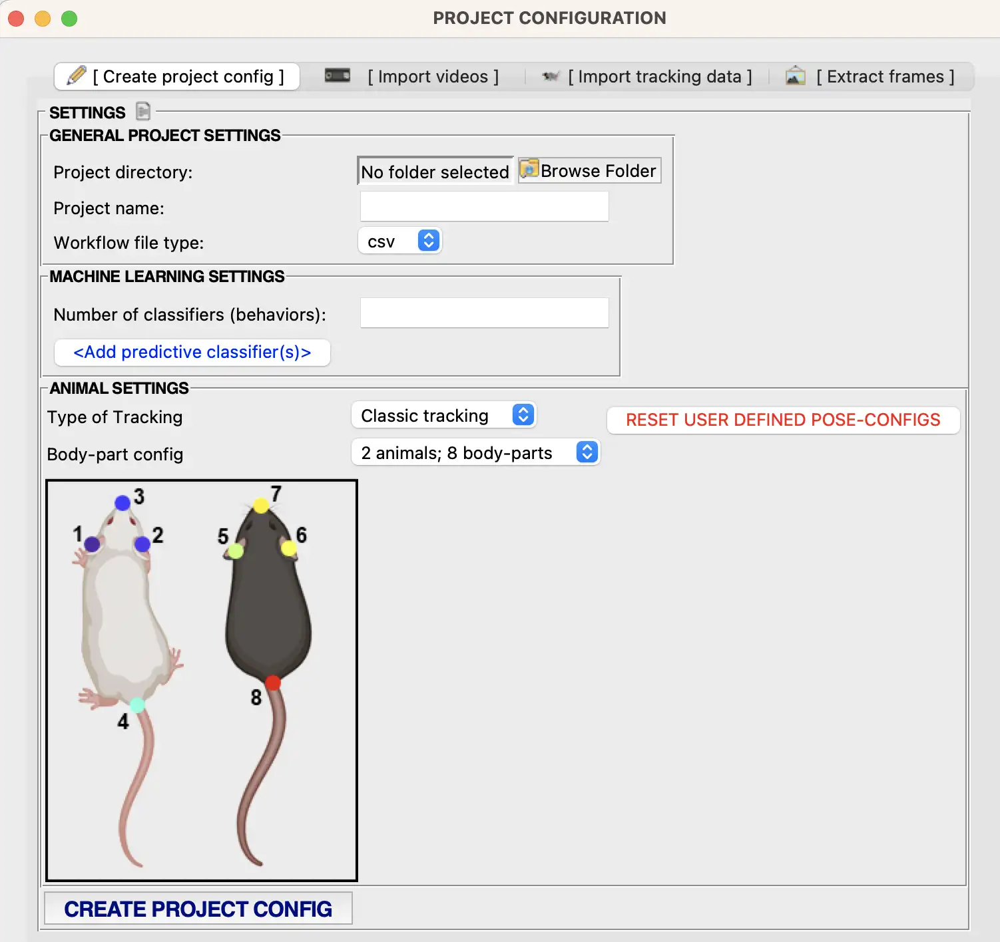

SimBA UI
- SimBA UI pop-ups
- simba.ui.pop_ups.about_simba_pop_up module
- simba.ui.pop_ups.append_roi_features_animals_pop_up module
- simba.ui.pop_ups.append_roi_features_bodypart_pop_up module
- simba.ui.pop_ups.archive_files_pop_up module
- simba.ui.pop_ups.batch_preprocess_pop_up module
- simba.ui.pop_ups.clf_add_remove_print_pop_up module
- simba.ui.pop_ups.clf_by_roi_pop_up module
- simba.ui.pop_ups.clf_by_timebins_pop_up module
- simba.ui.pop_ups.clf_descriptive_statistics_pop_up module
- simba.ui.pop_ups.clf_plot_pop_up module
- simba.ui.pop_ups.clf_probability_plot_pop_up module
- simba.ui.pop_ups.clf_validation_plot_pop_up module
- simba.ui.pop_ups.create_user_defined_pose_configuration_pop_up module
- simba.ui.pop_ups.csv_2_parquet_pop_up module
- simba.ui.pop_ups.data_plot_pop_up module
- simba.ui.pop_ups.directing_other_animals_plot_pop_up module
- simba.ui.pop_ups.distance_plot_pop_up module
- simba.ui.pop_ups.fsttc_pop_up module
- simba.ui.pop_ups.gantt_pop_up module
- simba.ui.pop_ups.heatmap_clf_pop_up module
- simba.ui.pop_ups.heatmap_location_pop_up module
- simba.ui.pop_ups.kleinberg_pop_up module
- simba.ui.pop_ups.make_path_plot_pop_up module
- simba.ui.pop_ups.movement_analysis_pop_up module
- simba.ui.pop_ups.movement_analysis_time_bins_pop_up module
- simba.ui.pop_ups.outlier_settings_pop_up module
- simba.ui.pop_ups.path_plot_pop_up module
- simba.ui.pop_ups.pose_bp_drop_pop_up module
- simba.ui.pop_ups.pose_reorganizer_pop_up module
- simba.ui.pop_ups.pup_retrieval_pop_up module
- simba.ui.pop_ups.quick_path_plot_pop_up module
- simba.ui.pop_ups.roi_analysis_pop_up module
- simba.ui.pop_ups.roi_analysis_time_bins_pop_up module
- simba.ui.pop_ups.roi_features_plot_pop_up module
- simba.ui.pop_ups.roi_tracking_plot_pop_up module
- simba.ui.pop_ups.set_machine_model_parameters_pop_up module
- simba.ui.pop_ups.severity_analysis_pop_up module
- simba.ui.pop_ups.smoothing_interpolation_pop_up module
- simba.ui.pop_ups.subset_feature_extractor_pop_up module
- simba.ui.pop_ups.third_party_annotator_appender_pop_up module
- simba.ui.pop_ups.validation_plot_pop_up module
- simba.ui.pop_ups.video_processing_pop_up module
BackgroundRemoverPopUpBoxBlurPopUpBrightnessContrastPopUpCLAHEPopUpCalculatePixelsPerMMInVideoPopUpChangeFpsMultipleVideosPopUpChangeFpsSingleVideoPopUpChangeImageFormatPopUpClipMultipleVideosByFrameNumbersPopUpClipMultipleVideosByTimestampsClipSingleVideoByFrameNumbersClipVideoPopUpConcatenatingVideosPopUpConcatenatorPopUpConvert2AVIPopUpConvert2BlackWhitePopUpConvert2MOVPopUpConvert2MP4PopUpConvert2PNGPopUpConvert2TIFFPopUpConvert2WEBMPopUpConvert2WEBPPopUpConvert2bmpPopUpConvert2jpegPopUpConvertROIDefinitionsPopUpConvertVideoPopUpCreateAverageFramePopUpCreateGIFPopUPCropVideoCirclesPopUpCropVideoPolygonsPopUpCropVideoPopUpCrossfadeVideosPopUpDownsampleMultipleVideosPopUpDownsampleSingleVideoPopUpDownsampleVideoPopUpExtractAllFramesPopUpExtractAnnotationFramesPopUpExtractSEQFramesPopUpExtractSpecificFramesPopUpFlipVideosPopUpGreyscaleSingleVideoPopUpImportFrameDirectoryPopUpInitiateClipMultipleVideosByFrameNumbersPopUpInitiateClipMultipleVideosByTimestampsPopUpInteractiveClahePopUpManualTemporalJoinPopUpMergeFrames2VideoPopUpMultiCropPopUpMultiShortenPopUpReverseVideoPopUpRotateVideoSetDegreesPopUpSuperImposeFrameCountPopUpSuperimposeProgressBarPopUpSuperimposeTextPopUpSuperimposeTimerPopUpSuperimposeVideoNamesPopUpSuperimposeVideoPopUpSuperimposeWatermarkPopUpUpsampleVideosPopUpVideoRotatorPopUpVideoTemporalJoinPopUp
- simba.ui.pop_ups.visualize_pose_in_dir_pop_up module
simba.ui.create_project_ui module
- class simba.ui.create_project_ui.ProjectCreatorPopUp[source]
Bases:
PopUpMixinMixin for GUI pop-up windows that accept user-inputs for creating a SimBA project.
- Example:
>>> ProjectCreatorPopUp()
{kind=link}
simba.ui.machine_model_settings_ui module
- class simba.ui.machine_model_settings_ui.MachineModelSettingsPopUp(config_path: Union[str, PathLike])[source]
Bases:
PopUpMixin,ConfigReaderGUI window for specifying ML model training parameters.
simba.ui.tkinter_functions module
- simba.ui.tkinter_functions.CreateLabelFrameWithIcon(parent: Union[Toplevel, LabelFrame, Canvas, Frame], header: str, icon_name: str, icon_link: Optional[str] = None)[source]
- class simba.ui.tkinter_functions.DropDownMenu(parent=None, dropdownLabel='', choice_dict=None, labelwidth='', com=None, **kw)[source]
Bases:
Frame
- class simba.ui.tkinter_functions.Entry_Box(parent=None, fileDescription='', labelwidth='', status=None, validation=None, entry_box_width=None, **kw)[source]
Bases:
Frame- property entry_get
- class simba.ui.tkinter_functions.FileSelect(parent=None, fileDescription='', color=None, title=None, lblwidth=None, file_types=None, dropdown: Optional[DropDownMenu] = None, initialdir: Optional[Union[str, PathLike]] = None, **kw)[source]
Bases:
Frame- property file_path
- class simba.ui.tkinter_functions.FolderSelect(parent: Union[Frame, LabelFrame, Canvas, Toplevel], folderDescription: Optional[str] = '', color: Optional[str] = None, title: Optional[str] = '', lblwidth: Optional[int] = 0, initialdir: Optional[Union[str, PathLike]] = None, **kw)[source]
Bases:
Frame- property folder_path
- simba.ui.tkinter_functions.SimbaButton(parent: Union[Frame, Canvas, LabelFrame, Toplevel], txt: str, txt_clr: Optional[str] = 'black', bg_clr: Optional[str] = None, font: Optional[Tuple] = ('Poppins Regular', 8), width: Optional[str] = None, height: Optional[str] = None, compound: Optional[str] = 'left', img: Optional[Union[PhotoImage, str]] = None, cmd: Optional[Callable] = None, cmd_kwargs: Optional[Dict[Any, Any]] = None, enabled: Optional[bool] = True, thread: Optional[bool] = False) Button[source]
- simba.ui.tkinter_functions.SimbaCheckbox(parent: Union[Frame, Toplevel, LabelFrame, Canvas], txt: str, txt_clr: Optional[str] = 'black', txt_img: Optional[str] = None, txt_img_location: typing_extensions.Literal['left', 'right', 'top', 'bottom'] = 'right', font: Optional[Tuple[str, str, int]] = ('Poppins Regular', 8), val: Optional[bool] = False, state: typing_extensions.Literal['disabled', 'normal'] = 'normal', cmd: Optional[Callable] = None)[source]
- class simba.ui.tkinter_functions.TwoOptionQuestionPopUp(question: str, option_one: str, option_two: str, title: str, link: Optional[str] = None)[source]
Bases:
objectHelpe to create a two-option question tkinter pop up window (e.g., YES/NO).
- Parameters:
question (str) – Question to present to the user. E.g.,
DO YOU WANT TO PROCEED?.option_one (str) – The first user option. E.g.,
YES.option_one – The second user option. E.g.,
NO.title (str) – The window titel in the top banner of the pop-up. E.g.,
A QUESTION FOR YOU!.link (Optional[str]) – If not None, then a link to documentation presenting background info about the user choices.
- simba.ui.tkinter_functions.create_scalebar(parent: Frame, name: str, min: int, max: int, cmd: object = None)[source]
- simba.ui.tkinter_functions.hxtScrollbar(master)[source]
Create canvas. Create a frame and put it in the canvas. Create two scrollbar and insert command of canvas x and y view Use canvas to create a window, where window = frame Bind the frame to the canvas
simba.ui.user_defined_pose_creator module
- class simba.ui.user_defined_pose_creator.PoseConfigCreator(pose_name: str, no_animals: int, img_path: Union[str, PathLike], bp_list: List[str], animal_id_int_list: List[str])[source]
Bases:
PlottingMixinClass for creating user-defined pose-estimation pipeline in SimBA through a GUI interface.
- ..seealso::
- Parameters:
pose_name (str) – Name of the user-defined pose-estimation setting.
no_animals (str) – Number of animals in the user-defined pose-estimation setting.
img_path (str) – Path to image representation of user-defined pose-estimation setting
bp_list (List[str]) – Body-parts in the user-defined pose-estimation setting.
animal_id_int_list (List[int]) – Integers representing the animal ID which the body-parts belong to.
- Examples:
>>> pose_config_creator = PoseConfigCreator(pose_name="My_test_config", no_animals=2, img_path='simba/splash_050122.png', bp_list=['Ear', 'Nose', 'Left_ear', 'Ear', 'Nose', 'Left_ear'], animal_id_int_list= [1, 1, 1, 2, 2, 2]) >>> pose_config_creator.launch()
simba.ui.video_info_ui module
- class simba.ui.video_info_ui.VideoInfoTable(config_path: str)[source]
Bases:
ConfigReader,PopUpMixinCreate GUI that allows users to modify resolutions, fps, and pixels-per-mm interactively of videos within the SimBA project. Data is stored within the project_folder/logs/video_info.csv file in the SimBA project.
- Parameters:
config_file_path (str) – path to SimBA project config file in Configparser format
- ..seealso::
- Example:
>>> video_info_gui = VideoInfoTable(config_path='MyProjectConfig') >>> video_info_gui.create_window() >>> video_info_gui.main_frm.mainloop()